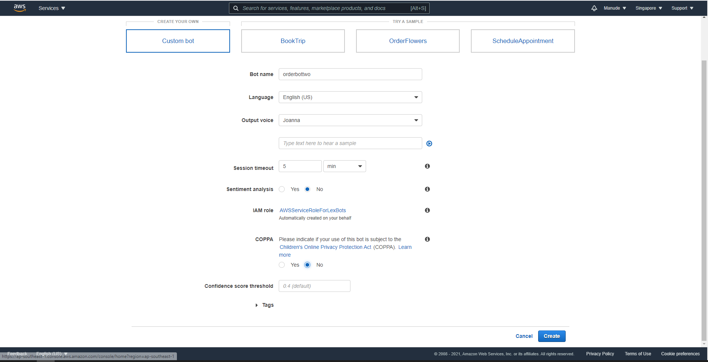
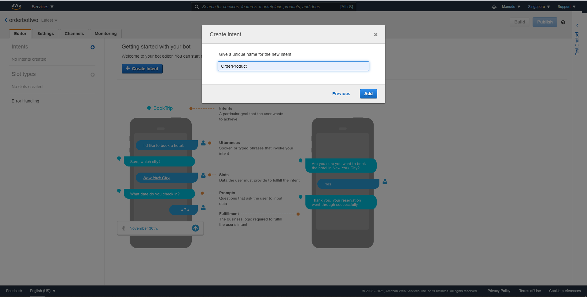
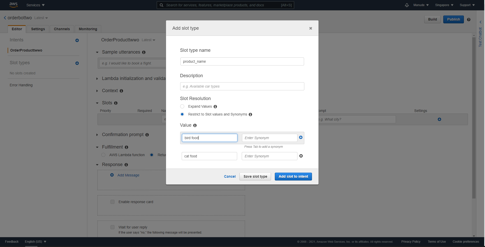
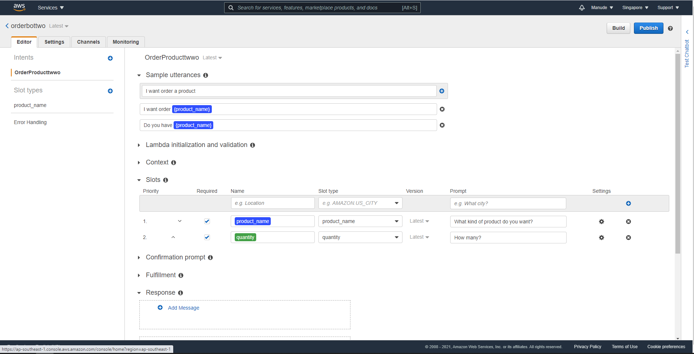
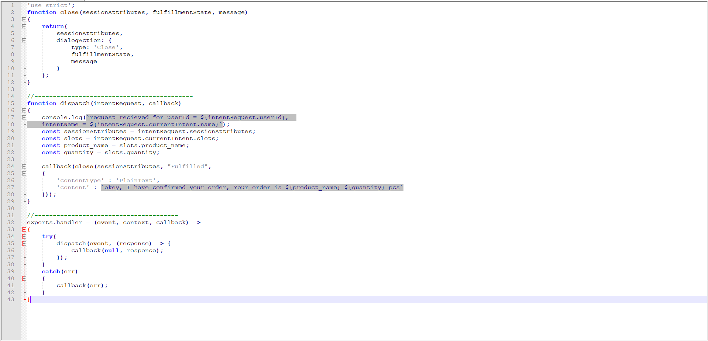
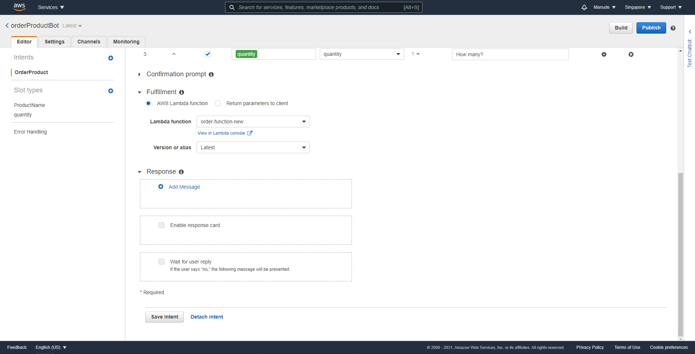
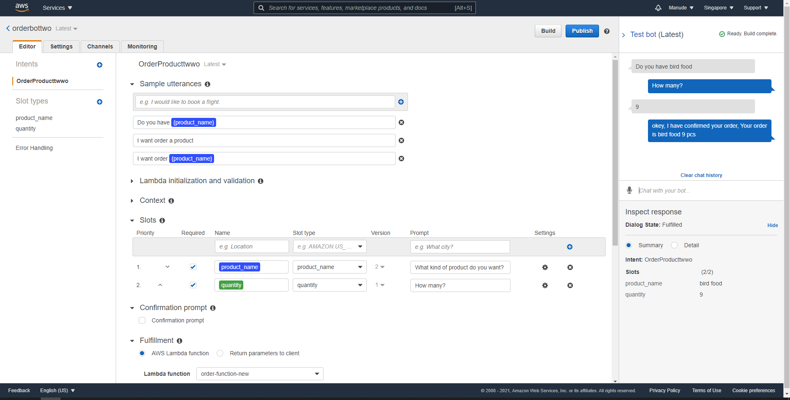

LEX คือ Chat bot ของ Amazon โดยเราจะมาทดลองใช้โดยให้ Ai Order สินค้าจาก DynamoDB โดยอัตโนมัติโดยผ่าน Lambda Function มีขั้นตอนการสร้างดังนี้ ไปที่ service->Amazon Lex กด Create และ ปรับค่าต่างตามรูปด้านล่าง
ต่อมาในหน้าถัดไปให้ create Intent ขึ้นมาตั้งชื่อตามต้องการ
ขั้นตอนต่อไปให้ create slot type ใส่ข้อมูลของ product_name ของเรา และให้ create อีก slot สำหรับใส่จำนวน 1 – 9
ต่อมาให้ใส่ข้อมูลตามรูปด้านล่าง
Sample utterances หมายถึง Ai จะตอบตามข้อมูลที่ได้รับเข้ามา และจะตอบกลับไปตาม prompt ที่ตั้งเอาไว้ เมื่อเสร็จแล้วไปสร้าง Role ไปที่ IAM create role เพิ่ม policy Amazon Lex full access จากนั้นไปที่ function lambda create function เลือก role ที่พึ่งสร้างมา เสร็จแล้วให้ พิมพ์ code และเปลี่ยนชื่อ slot กับที่เราตั้งไว้ ตามรูป
เสร็จแล้วให้กด Deploy และกลับมายังหน้า LEX อีกครั้งเลือก Function ที่เราสร้างเอาไว้ในช่อง Fullfillment ดังภาพเสร็จแล้วกด save Intent และกด build รอจนกว่าจะเสร็จ
เมื่อเสร็จให้ทดลอง chat กับ bot ที่เราสร้างขึ้นว่าตอบมาถูกต้องหรือไม่ ตามรูปด้านล่างถือว่าสำเร็จ
